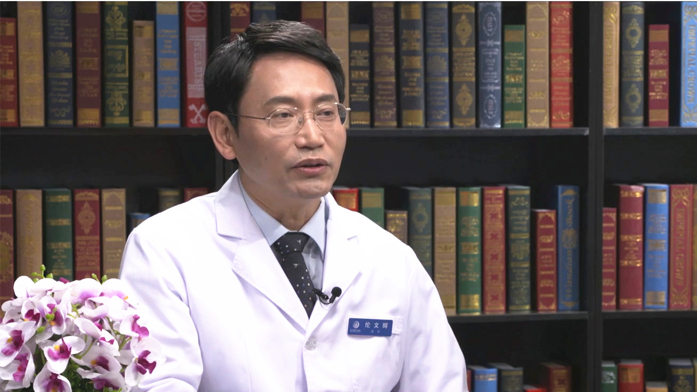

1.45 HPV疫苗¶
伦文辉 主任医师¶

首都医科大学附属北京地坛医院（国家感染病临床中心）皮肤性病科主任 主任医师 教授 博士生导师；
首都医科大学和北京大学医学部研究生导师；中华医学会热带病与寄生虫学分会皮肤病性病学组副组长；中华预防医学会生殖健康分会委员会委员；中国医疗保健国际交流促进会皮肤分会委员；中国中药协会皮肤病药物研究专业委员会常务委员；中国性病艾滋病防治协会学术委员会委员；中国性学会理事。
主要成就： 带领团队一直致力于皮肤病、性传播疾病以及皮肤美容的临床和科研工作，先后在日本国立感染症研究所和英国牛津大学做博士后研究和访问学者；获得教育部留学回国人员科研启动基金、国家“十一五” “十二五”重大科技攻关项目资助；共同主持《生殖道沙眼衣原体感染诊断》国家诊断标准的制定。
专业特长： 擅长HPV感染相关寻常疣、扁平疣、尖锐湿疣，以及女性宫颈HPV持续感染，梅毒及神经梅毒，痤疮和玫瑰痤疮，泌尿生殖道感染，各种面部色斑、毛细血管扩张及痤疮瘢痕的激光治疗，肉毒素及玻尿酸的注射治疗等。
感染HPV（人乳头瘤病毒）就会得宫颈癌吗？¶
（采访）宫颈癌仅位于乳腺癌，还有结直肠癌，是女性来说的第三大恶性肿瘤，尤其在发展中国家更是位居第二。现在随着大家健康意识的提高，不少女性会定期做妇科检查，还有宫颈检查，当她发现HPV呈阳性的时候，她会非常紧张，是不是要得癌症了？
对，临床上也遇到一些女性，发现自己感染HPV以后就特别恐慌，焦虑得有时候睡不着觉，来咨询我们，HPV感染以后一定会得癌症吗？
其实这个要具体问题，具体分析。HPV的确和一些癌症有关系，比如宫颈癌、肛门癌、喉癌，但并不意味着HPV感染了，一定会得癌症。
其实HPV叫人乳头瘤病毒，是非常普遍的病毒，很多人都感染过，这是一个大家族，比如小的时候，小朋友容易得寻常疣，有人得了扁平疣，甚至脚上长跖疣，这都是HPV感染引起的。
大家最紧张的是生殖器部位感染HPV，HPV大概有40多种能感染生殖器部位，但是在这个部位也分两种：
一种叫低危亚型，比如说HPV6、HPV11型这类的。为什么叫低危亚型？它引起的是良性病变，良性病变是什么？是最熟悉的尖锐湿疣，所以低危亚型感染引起的尖锐湿疣，并不会造成癌症。
现在最关注的是高危亚型的HPV，比如说HPV16、18、31、33，这些类型的感染造成了什么？研究发现，大概有99%以上的宫颈癌是由HPV高危亚型引起的，这就是人们担心的最重要原因。
但是并不是说感染了HPV，一定就会得宫颈癌，一般认为宫颈癌是和HPV相关，但不是充分条件，意味着一个人感染了HPV并不一定得宫颈癌。
大概有90%的人，虽然感染HPV，但是随着时间的延长，自己抵抗力的提高，可以慢慢的消失掉，所以90%的人都不会和HPV感染以后得宫颈癌相关。
大概只有10%的人，甚至不到10%的人，尤其HPV感染以后，消失不了了，造成高危亚型的HPV在宫颈部位长期的感染。长期感染，在局部可能促进细胞癌变，只有一小部分人才需要特别注意。
（采访）一说HPV大家可能想到跟宫颈癌相关的，但是可能身体的一些其他疾病也跟HPV有关系。
对，有关系。
（采访）您提到HPV是有多种亚型的，但只有高危亚型跟宫颈癌相关，可以说是它的一个致病因素，其他类型的跟宫颈癌是没有直接关系的吗？
对，有些亚型，比如引起的是寻常疣，就是“瘊子”，小朋友容易得。有些亚型引起扁平疣，尤其是在脸上，女性手上容易引起的。而引起宫颈癌的是一种特殊的亚型，是高危亚型。
为什么高危亚型能引起宫颈癌？因为其他亚型，病毒进入细胞以后是独立存在的，而高危亚型有一个特点。如果感染时间过长，高危亚型的HPV病毒基因能够整合在人体的DNA里面，就促进人体的DNA发生变化，其中一种变化就是癌变，造成宫颈癌的发生。
HPV（人乳头瘤病毒）的高危亚型有哪些？¶
（采访）高危亚型又有多少种？
现在来讲，最常见的大概27种，现在检测高危亚型，大概23种的也有，19种的也有，但引起宫颈癌的比如HPV16型、18型、31型、33型、45型、52型、58型，这些是最常见的亚型。
其他常见的亚型也有，但是刚才说的这几种亚型，占整个引起宫颈癌的HPV高危亚型的90%以上，剩下的亚型还有很多种，只是占10%左右，所以这些亚型是最重要的。
（采访）现在的HPV疫苗是不是根据您刚才提到的这些亚型来研发的？
对，HPV疫苗是根据这些亚型来开发的，因为HPV病毒那么多种，有几十种，选择哪些亚型，首先要做流行病学调查，就看看这些宫颈癌的病人究竟由哪些亚型发生的？
那么流行病学调查的结果，发现有70%的宫颈癌是由于HPV16和18引起的，HPV16和18是最主要的，所以最开始发明疫苗的时候是有二价疫苗。二价疫苗是什么？是HPV16和18，如果打二价疫苗，起码能够预防70%的宫颈癌。
后来发现70%也不够，还有30%，这些人也不能不管，那么就继续开发。研究发现了HPV31、33、45、52、58，这些亚型又占了20%，所以在九价疫苗里把这些又加了进来，现在来讲九价疫苗能够预防90%的宫颈癌的发生。
二价、四价、九价HPV疫苗有什么不同？如何选择？¶
（采访）现在常说的二价、四价、九价疫苗，都分别包括哪些亚型？
二价疫苗包括HPV16和18，其实二价疫苗和四价疫苗几乎同时上市，大概2004年左右，主要包括HPV16和18。
四价疫苗也是，最主要的是HPV16和18，因为是预防宫颈癌，后来觉得能不能顺便把尖锐湿疣也预防一下？所以在开发的过程中加了HPV6、HPV11，造成了四价疫苗。所以四价疫苗不但能够预防宫颈的HPV高危亚型感染，而且还能预防尖锐湿疣。
后来觉得二价疫苗和四价疫苗只能预防70%宫颈癌，还有30%也需要关注，就继续开发，开发了九价疫苗，包括HPV31、33、45、52、58。
其实现在更多的疫苗也在研究，在国外也研究13价疫苗，都在研究的过程中。
（采访）既然说二价、四价是以前开发出来的，现在九价比较火，是不是建议所有的适龄女性都去接种九价疫苗，毕竟它含的亚型是最多的？
将来的发展趋势的确是这样，九价疫苗要比二价疫苗和四价疫苗作为优先选择。
但注射疫苗还有卫生经济学问题，不同价位的疫苗，收费的价位也不一样。二价疫苗肯定是最便宜，四价疫苗要其次，九价疫苗是最贵的，因为国家幅员比较广阔，地区也不一样，如果都一起推广九价疫苗，从卫生经济学来讲，有些地方的人群可能负担过重。其实二价疫苗已经能预防70%的宫颈癌，也非常好，并且HPV16和18，在宫颈癌的发病中起着最主要的作用。
如果想普及，国家又没有那么多钱，其实先从二价疫苗普及也不妨是一个很好的办法，将来慢慢推广九价，如果有条件的人直接注射九价疫苗也可以，毕竟九价疫苗的保护率更高。
二价、四价、九价HPV疫苗接种年龄是多大？¶
（采访）对于想要接种HPV疫苗的人群来说，对她们的年龄和性生活是不是有要求？
疫苗接种有个原则，无论哪种疫苗都一样，在感染之前，接种效果是最好的，比如接种流感病毒疫苗，流感还没来的时候就开始接种。为什么？因为没感染流感的时候，接种效果、预防效果是最好的。
其实HPV疫苗注射的最佳年龄在9-14岁，在性生活出现之前。国外过去建议在性生活开始前的前一年来注射，有个好处就是当孩子有性生活的时候，她体内已经产生了足够的抗体来保护她了。否则，注射得太晚，体内没有足够的抗体来保护，所以一般建议，在性生活开始前的前一年注射是最好的。
如果小的时候，比如15岁之前接种两次就行，15岁以后一定要接种满三次。通过免疫评价发现，15岁以前的小孩子接种两次的效果和接种三次的效果差不多，人比较小的时候对疫苗更敏感。所以现在也提倡，15岁之前可以接种两次，但15岁以上的要接种三次。
我们国家是这样规定的，HPV的二价疫苗接种年龄是9岁-45岁，四价疫苗是20岁-45岁，九价疫苗是16岁-26岁。我们国家的药品监管机构批的时候，考虑到在亚洲人或者中国人中临床实验的证据充分不充分。但美国一般来讲是9岁-26岁都普遍接种，不说二价、四价、九价，最近又扩展到9岁-45岁，比较统一。在我们国家，不同疫苗有不同的接种适应年龄。
接种HPV疫苗分几次进行？¶
（采访）如果想要接种HPV疫苗，分几次进行？
一般来讲疫苗都是分三次，比如常见的乙肝疫苗是分三次接种，HPV疫苗也是。
二价疫苗一般来讲在0个月、1个月、6个月的时候接种。四价和九价疫苗，在0个月、2个月、6个月的时候接种。一般来讲，第一针和第二针之间至少要隔一个月，第二针和第三针之间至少要隔三个月。其实只要遵循这个原则都是可以的。
对15岁以下的孩子，打了第一针，再隔六个月的时候打第二针，所以在15岁以下，可以选择两次接种。
（采访）如果在接种的过程中，因为什么事情没有及时接种，对预防效果会不会有所折扣？
其实这是一个范围，一般来讲就是大概在一年之内，如果把三针疫苗都打进去，应该问题不大。
当然这种接种的方法，比如说第一针和第二针要间隔一个月，如果太短就不好，超过一个月都可以。第二针和第三针，间隔三个月，太短也不好，但是时间再长一点，问题也不大，一般在一年之内把三针都打进去，效果是可以保证。
（采访）在接种完HPV疫苗之后，多久能够产生抗体？是不是打完第一针身体就有抗体了？
是这样，抗体的产生是有时间的，这个时间每个人是不一样的，有的人反应比较积极，抗体产生比较早，有些人会比较慢。
一般来讲，无论是病毒感染，还是疫苗，抗体产生的时间大概在4-6周，抗体产生的时间是能够检测出来的。有可能抗体早就产生，在2-3周的时候已经产生，但是比较微量，检测不出来，但是真正能够检测出来抗体的话是4-6周的时间。
HPV疫苗可以治疗HPV（人乳头瘤病毒）感染吗？¶
（采访）如果检查比较高危的亚型发现是阳性了，是不是接种疫苗之后可以把阳性变成阴性？
是这样，现在发明的疫苗主要预防为主，是预防性疫苗，因为预防性疫苗和治疗性疫苗，在本质上有很大区别。
首先说预防性疫苗它是以中和抗体为主，诱发的是中和抗体，但中和抗体，作为治疗疫苗有个缺陷是一旦感染，病毒在细胞里面，不露出来，所以抗体引起的预防性疫苗，治疗效果就不好。
现在也在研究治疗性疫苗。治疗性疫苗有什么好处？治疗性疫苗不但可以把游离的病毒中和，还可以杀死病毒感染的细胞，比如黏膜细胞感染病毒了，黏膜细胞上有病毒的一些蛋白，治疗性疫苗可以诱发细胞免疫，细胞毒细胞就可以把感染病毒的细胞给破坏了，这是治疗性疫苗。
所以治疗性疫苗和预防性疫苗，在设计上是有差别的，所以往往预防性疫苗用于治疗效果并不是特别好。主要是很多病毒藏在细胞里面，对细胞里面的病毒效果是不太好的，所以现在治疗性疫苗也在研究当中，在将来估计会有治疗性疫苗上市。
感染HPV（人乳头瘤病毒）期间可以打HPV疫苗吗？¶
（采访）在接种疫苗前，对这个人有没有身体方面的要求？比如说很多人都感染过HPV，是不是把HPV治好之后，再去接种HPV疫苗？
现在提倡是这样，病毒感染的时候，病毒为了生存，很多病毒都会有抑制机体宿主反应的机制，不论通过什么方法，想办法逃避机体的免疫。
所以一般来讲，如果感染了HPV，最好还是先把它治疗好了，等治疗好了以后再打疫苗，这样诱发的机体免疫反应可能会更好，所以还是提倡先治疗好了，再打疫苗。
哺乳或孕期妇女可以接种HPV疫苗吗？¶
（采访）哺乳期或孕期的妇女可不可以接种HPV疫苗？
对于哺乳期和孕期的妇女，现在也做过一些研究，但是这方面研究比较少。
对怀孕的妇女，没有发现HPV疫苗对胎儿有致畸作用或者造成流产。但一般来讲，怀孕妇女是不提倡接种疫苗的，虽然疫苗本身对妇女来讲没有任何影响，但疫苗打进去是为了刺激人体的免疫反应，疫苗打进去以后，机体肯定会产生免疫反应，这种免疫反应是对抗性的，为了对抗病毒，所以免疫反应对胎儿是否有利，现在还没有人研究，所以现在不提倡在妊娠期接种疫苗。
对哺乳期其实也一样，哺乳期也没必要那么着急注射。从科学上来讲，对哺乳期的妇女影响比较少，但也可能会影响妈妈的免疫状态，这种免疫状态对孩子有什么影响，现在不知道，所以也不提倡在哺乳期注射疫苗。
接种HPV疫苗期间意外怀孕了怎么办？¶
（采访）接种疫苗是需要一段时间的，如果在接种疫苗期间意外怀孕，该怎么办？
注射疫苗期间意外怀孕，比如打了一针，是没问题的，因为的确研究过程说，疫苗对孩子是没有影响的，那第二针先不打了，生完孩子再打，这样就可以了。
（采访）对于接种疫苗期间意外怀孕的，等宝宝生下来之后再去接种疫苗，如果间隔时间超过一年了，是从第一针开始打，还是只补后面的这几针就可以？
一般来讲其实疫苗免疫要有个连续的过程，第一针作为基础，然后加强，再加强，这样刺激的人体免疫才会越来越强。
如果因为怀孕或者其他原因打了一针，第二针又隔一年以上了，还是建议超过一年以上的要把三针补齐，再从1、2、3来打。
打疫苗的时间要按照第一针打完了，一个月后再打第二针，或者两个月后打第二针，到六个月的时候再打第三针。
接种HPV疫苗后多久可以怀孕？¶
（采访）对于想要备孕的女生来说，在接种完疫苗多久之后备孕是最好的？
其实接种完疫苗以后对怀孕来讲影响不大，一般临床的习惯，无论是吃药，还是打针，三个月以后去备孕就可以。
但如果三针都接种完了，意外怀孕了，这个孩子是可以要的，没有任何问题。如果是计划怀孕，疫苗接种后三个月再去怀孕，这是非常安全的。
HPV疫苗是如何发现的？¶
（采访）什么时候发现HPV跟宫颈癌有直接关系的？
这要感谢一位豪森教授，是个德国人，他是HPV发现者，他本身并不是发现了HPV，而是发现了HPV的高危亚型和宫颈癌相关。大概经过了十多年的研究，他发现大多数宫颈癌里面都有HPV，并且这些病毒可以克隆出来，发现它是阳性的，这就直接证明了，宫颈癌是HPV引起的。
豪森教授因此获得了2008年的诺贝尔医学奖，大概1984年、1985年的时候，豪森教授曾经到各大药厂说服他们，说我发现了宫颈癌是由HPV引起的，一起开发HPV疫苗吧，但好多药厂都不理他，觉得这事能行吗？但是豪森教授一直在坚持，到后来终于证明发展疫苗是可以的。
现在来讲，HPV疫苗发现以后，不但可以预防HPV感染，还可以预防宫颈癌，HPV疫苗号称是人类第一个可以预防癌症的疫苗。
（采访）豪森教授发现了HPV和宫颈癌两个之间的关系，HPV疫苗是第一个把癌症作为适应证列入说明书中的疫苗，HPV疫苗是什么时候开始出现的？
HPV疫苗的研究早在90年代就开始了，其实研究的过程，开始并不顺利，因为HPV疫苗需要有个空间结构，就是生产的疫苗，它不但是个单纯的蛋白质，它还是一个类病毒。为什么是类病毒？原来给生产说它是一个单一的蛋白质，就是像其他疫苗一样，但是发现这个蛋白质打到人体里，刺激免疫效果并不是特别好，保护效率也不太好，然后就发现HPV疫苗也有一定的空间结构。现在的疫苗都是在生产酒的一种酵母菌里面，重组的一种类病毒结构，看起来像个病毒。
其实在研究的过程中，中国人也做了贡献，其中一个中国华人，叫周健博士，原来和我都是北京医科大学的。周健博士做研究的时候发现食道癌里面有HPV，所以他一直在研究HPV相关的内容。大概1990年的时候去昆士兰大学，和伊恩·弗雷泽博士一起研究HPV疫苗，这样在HPV类病毒空间构象方面做出了很大贡献。很可惜，周健博士英年早逝，还没有看到疫苗商业化，作为产品出现的时候，因为某种原因过早的去世了。
后来疫苗成功了以后，伊恩·弗雷泽博士就一直在各种场合说，疫苗的发现、发明是我和周健博士一起的成果，并不是我一个人的。后来他们共同获得了欧洲发明奖，就是因为HPV疫苗的发明获得了欧洲发明奖。
（采访）中国人也参与了HPV疫苗的生产。
对，并且在HPV疫苗研究的过程中起到了很关键的作用。
HPV疫苗可以预防宫颈癌吗？¶
HPV疫苗最开始是为女性设计的，设计的初衷主要是预防宫颈癌，包括宫颈癌前病变，所以现在看HPV疫苗说明书会这么写，第一个是预防HPV高危亚型的感染或者低危亚型的感染，因为现在包括HPV-6、11。第二个是预防宫颈的癌前病变，包括CINⅠ级、Ⅱ级、Ⅲ级，还有其他的阴道内的瘤变，就是和HPV相关的瘤变。
HPV疫苗不但预防HPV感染，还可以预防HPV引起的癌前病变。为什么说明书上都没有说要预防宫颈癌？因为宫颈癌的发生是一个漫长的过程，一般来讲经过10年、15年，甚至更长时间，才从HPV感染发生了宫颈癌。现在来讲疫苗大概是2004年才上市，大概到2020年的时候才是一个完整的HPV从感染到发生宫颈癌周期。
现在来讲（视频拍摄于2018年），预防宫颈癌的效果还没有这个数据，但是预防HPV的相关的癌前病变，包括CINⅠ级、Ⅱ级、Ⅲ级，现在有一些数据支持。所以科学起见他们都不说它预防宫颈癌，只是预防宫颈的癌前病变。
已婚妇女接种HPV疫苗还有效吗？¶
（采访）对于一些已婚、已孕的妇女，在她们看来，我结婚了，我生小孩了，去接种HPV疫苗可能效果没那么大的作用，您怎么看？
对于已婚的妇女，因为年龄大了，她的免疫刺激效果没有孩子那么好，但也有作用。
对于已婚的妇女如果接种是可以的，虽然妇女在一辈子当中有80%的机会感染HPV，但是不一定结婚前或者结婚那几年感染，可能在以后的时间感染，这是一个动态的过程。
所以已婚的妇女，一部分人可能没有感染HPV，当然她是接种HPV最佳的人群。
另外一部分人可能感染了HPV，但由于90%的HPV已经可以自己消失掉，有些人接触过HPV，不一定造成持续的感染，所以这部分人也有必要接种HPV疫苗。
还有一部分人可能造成持续感染，可能是感染的某个亚型，那么HPV疫苗还有其他型别，所以这样接种对其他疾病的预防也有好处，所以已婚的女性也可以接种HPV疫苗。
（采访）还有很多人认为，宫颈癌或HPV跟性生活有关系，有的人说我只有单一的性伴，平时也很注意卫生，是不是就不用去接种HPV疫苗了？
其实是这样的，HPV的感染和性生活是有关系的，尤其是和宫颈癌也有关系。发现有几个因素，如果开始性生活时间越早，这些人越容易感染HPV，或者是引起HPV的持续感染，造成宫颈癌。
另外一个因素就是比如有很多男朋友、女朋友，多性伴更容易造成HPV感染或者是宫颈癌的发生，这些因素都有。
那么有些人可能只有一个性伴，也没有任何炎症，需要不需要接种HPV疫苗？
其实HPV感染，主要强调是性传染的方面，其实HPV感染还有非性传染，就是非性的密切接触也可以传染。其实好多人自己不知道怎么感染HPV的，所以HPV肯定存在非性感染的渠道，尤其是结婚，两个人在间接的途径感染了HPV，也可能会带到宫颈。
所以只要是已婚的女性，或者准备结婚的女性，其实是需要注射HPV疫苗的，这样会有保护作用。
有性生活的女性和无性生活的女性，接种HPV疫苗有什么不同吗？¶
（采访）对于有过性生活和没有性生活的女性来说，她们接种HPV疫苗所达到的预防效果是不是一样的？
对成人来讲，预防的效果应该一样，因为有些人有性生活，没性生活，并不代表感染HPV和没感染HPV。所以对大多数人可能是没感染，或者有些人可能接触过HPV。
HPV感染也需要一定条件，不是沾到HPV就算感染，为什么有好多是一过性的HPV感染？因为在很多场合都能接触到HPV，有些皮肤黏膜是完整的，并且是没有炎症的，HPV只是附着在皮肤表面，检查的时候拿刷子一刷，正好把表面的病毒刷到了，检查就是阳性，但是这些病毒并没有真正侵犯到皮肤黏膜里面。
一般来讲，真正造成感染是由于皮肤黏膜有破损的地方，有小裂口，裂口眼睛可能看不见，但的确出现小裂口，HPV就进入到皮肤里去了，进入皮肤里面感染基底层细胞，因为基底层细胞是产生新皮肤的，所以就会随着基底层细胞不断的复制。所以假如大多数人虽然接触过HPV，但可能是没有造成深层的感染，也没问题，虽然检查出是阳性，可能过几个月就会消失。
在这种情况下，无论有性生活，没性生活，其实对HPV疫苗接种影响并不是特别大。所以提倡所有的女性还是接种HPV疫苗。
（采访）对于有性生活或者没性生活的人，她们选择疫苗的价别上有没有区别？
其实区别不是特别大，当然价别越多，可能保护的病毒亚型会越多，但实际上看你需不需要，也要和经济条件来匹配。比如有些亚型很贵，多了几个亚型，只保护20%，其实少了这20%，还有70%可以保护。如果考虑人群普遍接种，可以选择只要保护70%的就已经很好了，并且在中国，很多人只要能保护70%，大多数宫颈癌，就可以预防，从整个社会上来讲是有意义的。
当然随着经济、科学的发展，HPV多价的疫苗，保护的范围更广，那是更好的。但就目前来讲要根据情况具体分析，不一定非得要九价疫苗。
接种过二价、四价HPV疫苗，还可以接种九价疫苗吗？¶
（采访）以前接种过二价或四价疫苗的女性来说，九价疫苗现在也陆续的上市了，她们想是不是还可以再接种一下九价疫苗？毕竟九价含的亚型要多。
对，这个提法很好，接种过二价疫苗和四价疫苗的人，也可以接种九价疫苗。比如刚刚工作，九价疫苗很贵，可以先接种二价和四价，过了几年，人的抗体保护、疫苗的抗体保护，势必会衰弱，衰弱过程中可以再接种九价疫苗。
现在有科学研究已经发现，打过二价疫苗的，再接种九价疫苗，其实没有任何影响。
相反打过二价疫苗以后再接种九价的时候，发现九价HPV16、18，它的抗体要远远高出其他抗体，比如说HPV31、33、52、58。原因是什么？因为在接种二价疫苗的时候，已经有免疫记忆了，就是身体的记忆，虽然可能抗体的滴度在减低，但它的记忆力还存在。一旦接种九价疫苗的时候，抗体产生会更高，保护率也会更高。
所以每个女孩子都有自己的选择，根据自己的情况来选择。比如现在刚刚工作，可以先接种二价或四价，先给自己保护起来，过几年随着工作负担承受能力强，再接种九价疫苗也可以。
（采访）接种的间隔时间有没有要求？
一般来讲，接种一类疫苗，再接种第二类疫苗的时候，至少要超过一年以上。比如接种了二价疫苗，现在来讲可以承担九价疫苗了，那可以一年以后再接种九价疫苗。
（采访）您提到对于以前接种过二价或四价，再接种九价的时候，她体内产生的抗体会更明显、更强烈，会不会有的人就认为产生的抗体越多越好，每年都去接种一下疫苗？
其实没有必要，比如说吃饱了，再吃一个馒头，那也可以，但是实际上是没有作用的。因为产生一定的抗体，能够起保护作用就行了，再接种有个问题就是后面的接种是无效的，本来接种这三针已经可以保护起来了，再接种的那些就是浪费钱。
接种过HPV疫苗还需要做宫颈筛查吗？¶
（采访）对于已经接种过HPV疫苗的女性来说，是不是以后就不会得宫颈癌了？
其实也不是这样，现在来讲九价疫苗覆盖的HPV高危亚型是90%，还有10%是需要注意的。
另外接种疫苗以后，随着时间的推移，时间长了，保护是有效期的，每个人不一样，有的人可能效期长一点，有的人效期短一点，但是比较是有效期的。
（采访）平均来说呢？
现在一般认为是9-10年左右，还在观察，因为九价疫苗上市时间短，随着时间推移还在观察，所以筛查是有必要的。
所以任何人不能因为自己接种了HPV疫苗，而忽视了筛查，筛查其实很简单，查HPV，查宫颈的TCT，就是细胞学病变，对女性来讲其实是很简单的，所以不能因为接种了疫苗就不去查了，这是不对的。
当然接种疫苗以后大概率事件不会发生宫颈癌，但万一是小概率事件呢？对群体来讲，疫苗的普及对绝大多数人可以保护起来，不发生宫颈癌，对个体来讲，有可能感染的恰恰是疫苗保护不了的亚型。
所以即使接种宫颈HPV疫苗的女孩子，现在也提倡定期进行HPV的筛查。
（采访）您建议多久做一次筛查？
一般来讲如果是育龄妇女，先做一次筛查，如果筛查是阴性，可以三年筛查一次。
男性也需要接种HPV疫苗吗？¶
（采访）一说HPV疫苗，想到女性要打，那男性朋友是不是也需要打HPV疫苗？
过去HPV疫苗就是给女性设计的，因为主要的目的是防治宫颈癌，近年来越来越希望男性也来注射HPV疫苗。
男性打有几个好处，一个好处是男性他是作为HPV载体，可以传播HPV，注射疫苗后可以减少传播。
另外HPV高危亚型病毒，不单单引起宫颈癌，比如肛门癌、咽癌、喉癌，都有可能和HPV感染有关系，虽然不像宫颈癌有这么高的相关性，但是也是有关系的。
所以对男性来讲，打HPV疫苗也可以预防，比如说肛门癌、阴茎癌、喉癌。有一个例子，迈克尔·道格拉斯，非常有名的一个影帝，他最后得了喉癌，他就宣传喉癌是由HPV引起的，因为性生活的方式多种多样，他的喉癌是由于HPV感染造成的，所以对男性来讲，接种疫苗还有这个好处。
另外的好处是，无论四价、九价也好，它能预防尖锐湿疣，尖锐湿疣是由HPV6和11引起的，大概90%的尖锐湿疣是这两个亚型引起的，所以男性接种疫苗还可以预防尖锐湿疣，所以男性也可以接种HPV疫苗。
但是男性接种是刚刚开始，现在主要还是集中在保护女性这个范围，所以现在我们国家批准的适应证还是主要针对女性。
接种HPV疫苗需要注意什么？¶
（采访）在接种HPV疫苗前，需要准备什么？
接种HPV疫苗之前，一般来讲不需要做特殊准备，尤其对没有性生活的女性，就不需要做准备，可以问一下有没有过敏史，因为HPV疫苗是由于基因工程重组生产出来的疫苗，比如对酵母蛋白过敏的人就要小心点，一定要咨询一下医生，看看对酵母是不是过敏，过敏就不能打，虽然提纯了，但是毕竟在酵母菌生产出来的东西，可能对那一种蛋白过敏。大多数来讲不会过敏，所以没有性生活的女性可以直接接种。
有性生活的女性，最好还是查一下，宫颈的HPV、TCT，如果有宫颈病变先治疗，治疗完再打疫苗，这样比较好。
（采访）在接种疫苗的时候需要注意什么？
这个疫苗现在来讲基本还是比较安全的，接种疫苗主要是对疫苗本身，因为HPV疫苗本身是一个蛋白质，是由于酵母菌生产出来的，对蛋白质本身这种成分或者酵母菌的蛋白，如果有过敏，一定要小心，因为打疫苗过敏还是一个比较严重的事件，如果没有过敏史的人完全可以放心。
另外要注意最近是不是感冒了，比如感冒了或者生重病了，这段时间因为机体免疫力本来就比较低，就没必要趁这时候来打，等感冒好了以后再打。
还需要注意的就是有些打疫苗的人，尤其女性打完了以后会有头晕的症状，打完疫苗以后一定要休息15分钟，让医生观察一下，别打完疫苗就走了，有些人的确发生过打完疫苗以后头晕，什么原理还不知道，尤其是女孩子，这点需要注意。
另外一个就是打HPV疫苗或者其他疫苗也经常发生的事情，比如有些人发热、局部红、肿、热、痛，稍微注意一下就行。
接种HPV疫苗安全吗？¶
（采访）有没有一些女性朋友，在接种完HPV疫苗之后，出现了不良反应？
HPV疫苗接种的确会有不良反应，但不是每个人都会发生。
HPV疫苗接种的人非常多，它是2006年上市的，现在在100个国家和地区，接种了大概超过1亿支，所以接种的范围非常广泛，各个人种都包含，接种的数量也很大，超过1亿支，发现它基本是安全的。
有些打疫苗的确会有些反应，主要就是打疫苗的部位，局部疼痛、红肿，这是最常见的，一般在局部打蛋白进去，会引起免疫反应，局部红肿疼痛，有部分人会有头疼、恶心、疲劳，还有一些胃不舒服，这是个别人发生的。
有些女性发现就是打完针以后会有眩晕、晕厥，所以现在提倡打完疫苗以后要多休息一段时间，一般来讲要休息15分钟，让医生观察一下，15分钟以后再回家，这样比较安全。
其他的不良反应，比如更严重的栓塞这些都没有发生过。
另外发现，二价疫苗、四价疫苗，疫苗里面的量要少一些，九价疫苗包含的病毒数多，所以量要多。所以发现九价疫苗局部反应比四价、二价要严重一点，这是正常现象，不用害怕。
（采访）接种HPV疫苗会不会感染病毒？
现在来讲生产的疫苗并不是像过去那样，是把病毒直接拿过来改造，然后再进行接种。
现在是活病毒或者减毒的疫苗，这种疫苗不是病毒本身，它是病毒一个特殊的蛋白质，并且特殊蛋白质给构象成像类病毒一样的东西，是由于基因工程生产出来的。
具体来讲，生产的工厂是什么？是酵母菌。酵母菌不生产整个病毒，只生产病毒本身的一段蛋白质，蛋白质变成颗粒状的，类病毒的东西注入身体里，能够引起免疫反应。这种免疫反应能够预防HPV。
所以注射的疫苗不是病毒本身，不含有病毒，比如说基因，只含有病毒的蛋白质，这样不会造成病毒的感染。
HIV阳性患者可以接种HPV疫苗吗？¶
（采访）HIV呈阳性的患者还可不可以接种HPV疫苗？
HPV疫苗对所有人都适合的，有些HIV阳性的病人，包括一些移植后的病人她吃免疫抑制剂，还有一些因为自身免疫病的病人吃一些激素，这些病人往往免疫力低，所以注射效果，刺激免疫反应，就不如免疫正常人那么强烈，那么好。
但是这些人是可以注射的，虽然抗体的滴度、效价、免疫反应不如正常人那么好，但是注射还是有保护作用的，并且可以加强注射，通过这些方法弥补抗体的不足。
所以现在提倡HIV阳性的女性，包括一些吃免疫抑制剂或者其他免疫缺陷的女性是可以注射HPV疫苗的。
每年都进行宫颈筛查可以不接种HPV疫苗吗？¶
（采访）如果这个朋友每年都进行妇科检查，还有宫颈筛查，是不是就可以不用打HPV疫苗？
的确，妇科检查和宫颈筛查可以早期发现HPV感染，尤其持续性HPV感染，可以预防宫颈癌。
宫颈癌也不是所有人都发生，HPV感染只有不到10%的人长期病毒感染，才有可能发生宫颈癌。
但是HPV疫苗注射的好处是，注射了以后能够保护，不会造成感染，因为发现了自己感染，很多人很焦虑，造成很大的心理负担。
另外假如持续HPV感染，甚至因为持续HPV感染发生CINⅠ级、Ⅱ级、Ⅲ级，还是需要治疗，在治疗的过程中一个是花费，另外一个自身也受到很大的痛苦和很大的心理压力。那么注射疫苗可能会减少它的发生，所以其实注射疫苗还是有一定好处的。
（采访）所以最好的办法还是，既接种HPV疫苗，也需要定期的去做宫颈筛查、妇科检查。
对，是这样的。
哪些医院可以接种HPV疫苗？¶
（采访）在哪些地方可以接种HPV疫苗？
我们国家预防保健系统是非常完善的，尤其预防保健是植根于社区，现在来讲在北京市或者其他地区各个社区保健站和社区卫生服务中心，都能够提供疫苗的接种服务。
在二级医院和三级医院也可以接种，二级医院、三级医院都有预防保健科，这些预防保健科也可以接种疫苗。
但由于疫苗的生产过程要求非常严格，运输和保存也非常严格，它需要冷链，在一定条件下保存，它不像药品可以储存很多，各个地方要临时配送，储存时间也不能太长。所以现在来讲，各个社区的卫生保健站，包括各个医院，自己存的疫苗量都不会太多。
所以一般要打疫苗，到社区的卫生保健中心，还有各个医院的预防保健科去预约，预约了以后注射疫苗，这样比较好。